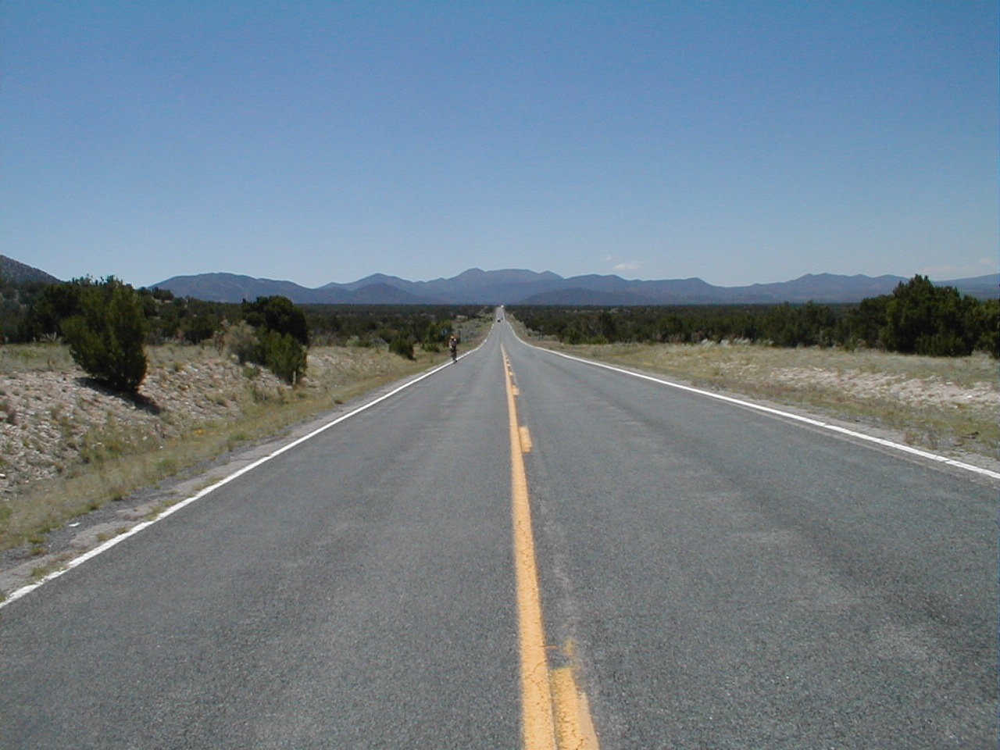

Day 13: May 25, Albuquerque, NM to Santa Fe, NMPrevious Day - Home - Next Day Photo of the DayThe road to Madrid, the Sandia Mountains in the background. Keegan's LogDay 13: May 25, Albuquerque, NM to Santa Fe, NM Mileage: 67.80 milesWeather: 70-95 degrees, Sunny in the morning, partly cloudy in the evening, Varying winds Vertical Climb: 4500 feet Riding Time: 5:30 Today we started at the very bottom of the Rio Grande valley in Albuquerque, so the trip out of town was uphill all the way. We continued into the Sandia Mountains outside of Albuquerque, and ascended nearly 2000 feet by the time we reached a bagel shop at 22 miles. I was taking it easy because my hip was still stiff in the morning, though it did loosen up over time. We finally reached the bagel shop just as the other riders were pulling out, we stopped to have a late breakfast though. The road to the first sag was up and down, but the views were excellent along the way. From the mountains all of Albuquerque was visible, and the hills were mostly covered by short shrubs, as we are still in the high desert. We reached the sag in Golden, NM at about 33 miles, we kept the stop short to save a little time. The next stop was the town of Madrid, but first we had some more climbing, this time to over 7,100 feet. When we reached the peak, we found ourselves overlooking a valley, the city of Santa Fe a distant sprawl below. We began the long descent, first reaching Madrid. We stopped for a quick lunch at the Mineshaft Tavern, but the quick lunch ended up taking over an hour. After lunch we continued our descent into the valley. We caught up with a sag that had been looking for us, Rick rode sweep behind us to make sure we made it in okay. For some reason the last stretch was exhausting for dad and I, the hills were long and rolling, so the last 15 miles were tough. We made it to the hotel, exhausted, I was too tired to take a shower right away. Pat fixed my bike, my derailleur had been knocked crooked in my fall yesterday. Tomorrow we have a much-needed day off, I know I can't wait to sleep in! Phil's LogToday didn't seem like it would be so tough, but it was. We entered Albuquerque yeesterday on Central Avenue, the old Route 66, coming down a long hill. We left the same way today, riding Central Avenue east past Tramway Avenue and up the pass, still on what was Route 66, out of the city. Somehow I had the impression that we'd climb the pass and Santa Fe' would be there. There were probably 50 miles of roling valley between mountains, a lovely high desert area, but it was long with many climbs. By the time we got to Santa Fe', we were pretty expended. I battled with the Pepsi machine for something cold to drink. After route rap, 12 of us went to a Mexican restaurant down the street (still the old Route 66, I believe.) Lots of unusual stuff on the menu,, i had a chocolate burrito, very spicy. A strolling guitarist played requests if we new Spanish songs to request. Thankfully tomorrow is an off day. Our quadricepts are constantly borderline sore, not to mention our butts. That reminds me - we have received a number of interesting questions. Tomorrow I'll answer and tell all. Yawn. Good night. |
{kind=link}